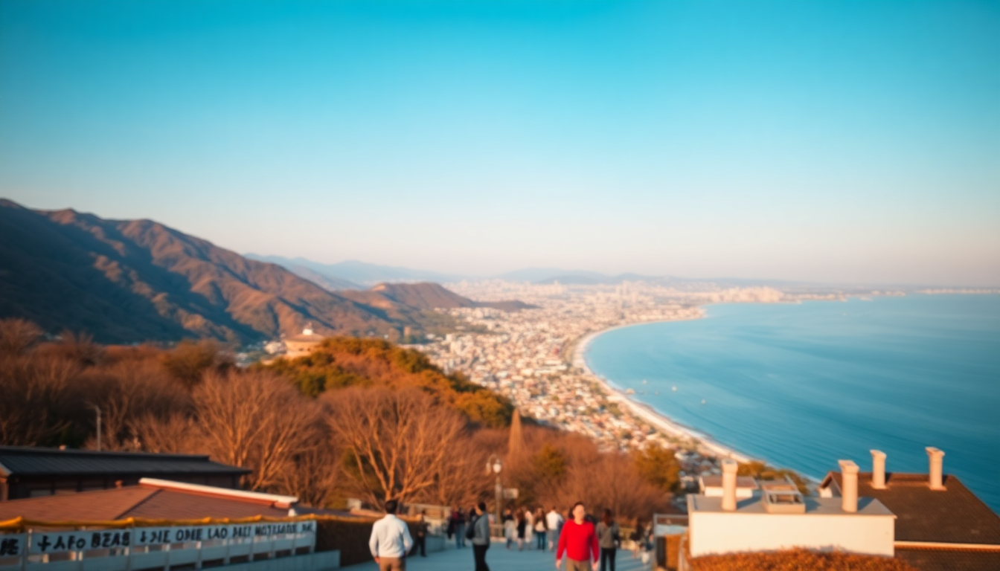

7 Days in Japan: Tokyo, Kyoto & Osaka Itinerary

I landed at Narita with a backpack, a vague plan, and a JR Pass waiting at the counter. Seven days to hit Tokyo, Kyoto, and Osaka. It’s tight — no two ways about it — but totally doable if you move smart and skip the filler. Here’s exactly how I did it, with the stops that earned their spot and a few I’d drop next time.
How Do You Get Between Tokyo, Kyoto, and Osaka?
The Shinkansen is your only real option. I grabbed a 7-day Japan Rail Pass before leaving — it paid for itself by day three. From Tokyo Station, the Nozomi train (fastest, but not covered by the pass) hits Kyoto in about 2 hours 15 minutes. I used the Hikari train, which takes 2 hours 40 minutes but is JR Pass-compatible. Osaka is just 15 more minutes from Kyoto on the same line.
- Tokyo to Kyoto: Take the Hikari Shinkansen from Tokyo Station. Reserve a seat on the right side for Mount Fuji views if the weather is clear.
- Kyoto to Osaka: Quick hop on the JR Tokaido line or the Shinkansen — 30 minutes tops.
- Local travel in cities: I relied on Suica cards (load at any station kiosk) for Tokyo subways and Osaka Metro. In Kyoto, buses are more useful than trains for reaching temples.
Book Shinkansen seats a day ahead at the JR ticket office — especially if you’re traveling during peak hours. I didn’t, and ended up standing from Kyoto to Tokyo one evening.
Where Should You Stay in Tokyo for First-Timers?
I based myself in Shinjuku, and I’d do it again. It’s chaotic in the best way — neon, endless food options, and direct train access to Shibuya, Asakusa, and Tokyo Station. We stayed at Hotel Gracery Shinjuku (yes, the one with the Godzilla head). It’s clean, well-located, and the rooms are small but functional — standard Tokyo.
- Shinjuku: Best for nightlife, shopping, and transit. Walkable to Golden Gai (tiny bars) and Omoide Yokocho (grilled skewer alley).
- Asakusa: Quieter, more traditional. Good for budget hotels and proximity to Senso-ji temple.
- Shibuya: Central but pricier. You’re steps from the scramble crossing and Shibuya Sky viewpoint.
If I had a bigger budget, I’d have splurged on Park Hyatt Tokyo — the bar scene from Lost in Translation is real, and the views are worth the upgrade. For budget, APA Hotels are everywhere and reliable, just cramped.
What Should You Do on Day 1 in Tokyo?
Start early. Jet lag works in your favor here. I hit Tsukiji Outer Market by 7 a.m. — the sushi is fresh, but skip the tourist-trap stalls selling overpriced skewers. Head to Sushi Dai if you’re willing to queue for an hour. I wasn’t, so I grabbed tamago (egg omelette) from a side stall and moved on.
- Morning: Tsukiji Outer Market, then walk to Hamarikyu Gardens — a quiet escape with a tea house right on the water.
- Afternoon: Senso-ji Temple in Asakusa. It’s packed, but the Nakamise shopping street leading up to it is fun for souvenirs. Try the melon pan (sweet bread) from a vendor near the gate.
- Evening: Shibuya Scramble at sunset. Hit the Starbucks above the crossing for a photo, then grab ramen at Ichiran Shibuya — solo booths, no small talk, perfect after a long day.
Honest take: Senso-ji is a tourist zoo by noon. Go early or accept the crowds. The temple itself is impressive, but the experience is more about the energy than the serenity.
What’s the Best Way to Spend Day 2 in Tokyo?
Day two is for the neighborhoods that feel less like a postcard. I spent the morning in Harajuku — but skip Takeshita Street unless you want crepes and crowds. Instead, walk the side streets: Ura-Harajuku has small boutiques and cafes like Reissue (good coffee, no line). Then head to Meiji Jingu — it’s a short walk from Harajuku Station and feels like a forest in the city.
- Morning: Meiji Jingu (arrive by 9 a.m. to avoid crowds), then wander Ura-Harajuku.
- Lunch: Afuri in Ebisu for yuzu shio ramen — lighter than tonkotsu, and the broth is citrusy and clean.
- Afternoon: Roppongi Hills for the Mori Art Museum and the Tokyo City View deck. It costs ¥1,800, but the view beats Shibuya Sky and is less crowded.
- Evening: Shinjuku Golden Gai — pick a tiny bar with a cover charge under ¥1,000. I liked Bar Albatross for its three floors and friendly owner.
Overrated warning: The Robot Restaurant in Shinjuku. It’s ¥8,000 for a loud, kitschy show that feels like a fever dream. Skip it unless you’re drunk and have cash to burn.
How Do You Handle Kyoto in Two Days?
Kyoto deserves a week, but you have two days. I took the Shinkansen from Tokyo early on day three, dropped my bag at The Millennials Kyoto (a capsule hotel with a social lounge — surprisingly comfortable), and hit the ground running.
- Day 3 afternoon: Fushimi Inari Shrine. Go late (after 4 p.m.) — the crowds thin out, and the torii gates are more atmospheric in the fading light. I hiked to the top in about 90 minutes; the halfway point has good views and fewer people.
- Day 3 evening: Pontocho Alley for dinner. I ate at Kikunoi (a Michelin-starred kaiseki spot) — pricey at ¥15,000 per person, but worth it for the multi-course experience. Budget option: Ippudo near Kyoto Station for solid ramen.
- Day 4 morning: Arashiyama Bamboo Grove at 6:30 a.m. It’s the only way to see it without a selfie stick in your face. Then walk to Tenryu-ji Temple — the garden is better than the bamboo.
- Day 4 afternoon: Kinkaku-ji (Golden Pavilion). It’s a 20-minute bus ride from central Kyoto. The gold leaf is stunning, but the site is small — 45 minutes is plenty.
- Day 4 evening: Gion district. Walk the streets after dark — geisha sightings are rare but possible. I spotted one near Shimbashi Bridge.
Real talk: Kyoto is the most crowded city I visited in Japan. The temples are beautiful, but the bus system is slow and packed. Rent a bicycle if you’re comfortable — it’s faster and more flexible.
What’s the Osaka Itinerary for Days 5 and 6?
Osaka is Kyoto’s loud, food-obsessed cousin. I took the JR train from Kyoto on day five and checked into Hotel Nikko Osaka in Namba — right above the train station, perfect for exploring.
- Day 5 afternoon: Dotonbori — the canal area with giant neon signs (the Glico Runner is iconic). Eat your way through: Takoyaki from Kukuru, okonomiyaki from Chibo, and kushikatsu from Daruma.
- Day 5 evening: Shinsekai neighborhood. It’s grungy and old-school — think retro arcades and cheap eats. I had kushikatsu at Yakitori Katsura for ¥2,000 total.
- Day 6 morning: Osaka Castle. The park is free; the museum inside costs ¥600. Skip the elevator and walk up — the exhibits are better than the view.
- Day 6 afternoon: Kuromon Ichiba Market for lunch. Try the grilled scallops and wagyu skewers — about ¥1,500 for a full meal.
- Day 6 evening: Umeda Sky Building for sunset. The Floating Garden Observatory is ¥1,500, but the open-air deck is worth it.
Osaka’s food scene is the highlight. Skip the tourist-oriented okonomiyaki chains and find a small spot in a side alley. I stumbled into Okonomiyaki Mizuno — a 30-minute wait, but the chef cooks it in front of you.
How Do You Spend the Last Day?
Day seven is a travel day, but you can squeeze in one more stop. I chose Nara — it’s 45 minutes from Osaka by Kintetsu train. The deer in Nara Park are tame (and aggressive if you have crackers), but Todai-ji Temple houses a 15-meter bronze Buddha that’s genuinely awe-inspiring.
- Morning: Nara Park and Todai-ji. Buy deer crackers for ¥200, but keep them hidden — the deer will nudge you for more.
- Afternoon: Return to Osaka for last-minute shopping at Shinsaibashi or head to Kansai Airport (50 minutes by Nankai train).
If Nara feels like a detour, stay in Osaka and hit Amerikamura for vintage shopping or Sumiyoshi Taisha shrine — it’s quieter than Kyoto’s temples and has a unique bridge design.
FAQ
Is 7 days enough for Tokyo, Kyoto, and Osaka? It’s enough for a solid introduction, but you’ll move fast. I spent 2 days in Tokyo, 2 in Kyoto, 2 in Osaka, and 1 in Nara. You won’t see everything, but you’ll hit the highlights. If I had to cut one city, I’d drop Osaka and add a day to Kyoto.
What’s the best way to get a JR Pass? Buy it online before you leave Japan — you can’t purchase it after arrival. I used the official JR Pass website (¥33,600 for 7 days) and picked it up at Narita Airport. Compare prices with third-party sellers like Klook — sometimes they’re cheaper, but the official site is more reliable.
Should I stay in a ryokan or a hotel? If your budget allows, book one night in a ryokan — it’s a cultural experience (tatami mats, onsen, kaiseki dinner). I stayed at Ryokan Sanga in Kyoto for ¥25,000 per night. It was worth it for the private bath and multi-course meal. For the rest of the trip, hotels or capsule hostels are more practical.
Conclusion
- Move fast but smart. The Shinkansen is your best friend — reserve seats early and pack light.
- Eat where locals eat. Skip the tourist menus in Dotonbori and find small stalls in Shinsekai or Pontocho.
- Book Kyoto’s bamboo grove for early morning. It’s the only way to enjoy it without the crowds.
- Carry cash. Many small shops and restaurants in Kyoto and Osaka don’t take cards.
- Don’t overplan. Leave one afternoon free to wander — I found my best meals by accident, not itinerary.